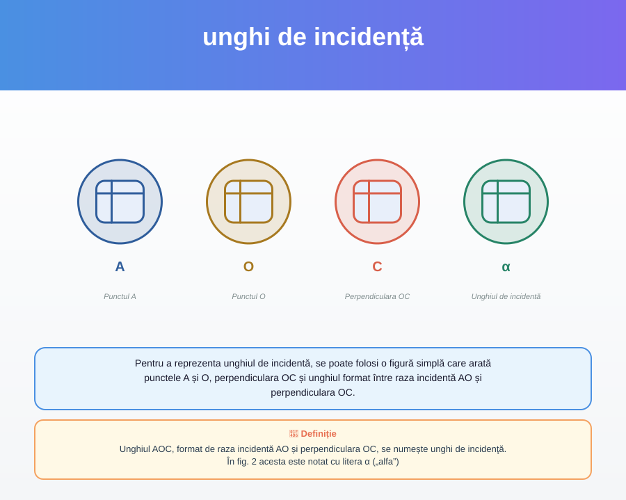

Schimbarea direcției de propagare rectilinie a luminii la suprafața de separație a două medii prin întoarcerea ei în mediul din care vine se numește reflexie a luminii.
Linia întoarcere este demonstrată pentru exemplu, indicând schimbarea direcției de propagare a luminoasă.
p. 8Suprafața plană, netedă și lucioasă care reflectă bine lumina se numește oglindă plană.
Reprezintă o suprafață plană lucioasă care reflectă lumina.
p. 8
Unghiul AOC, format de raza incidentă AO și perpendiculara OC, se numește unghi de incidenţă. În fig. 2 acesta este notat cu litera α („alfa”)
Pentru a reprezenta unghiul de incidentă, se poate folosi o figură simplă care arată punctele A și O, perpendiculara OC și unghiul format între raza incidentă AO și perpendiculara OC.
p. 8